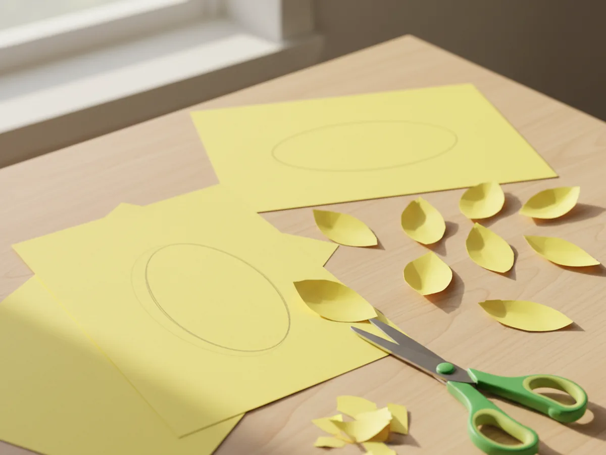
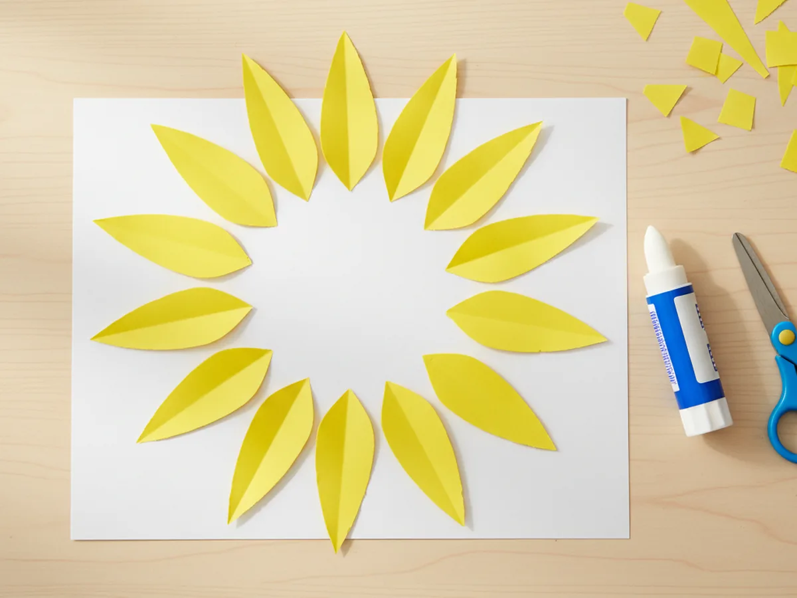
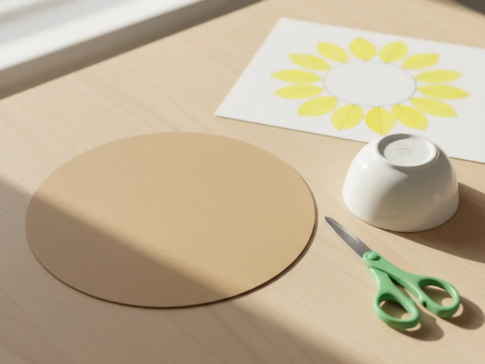
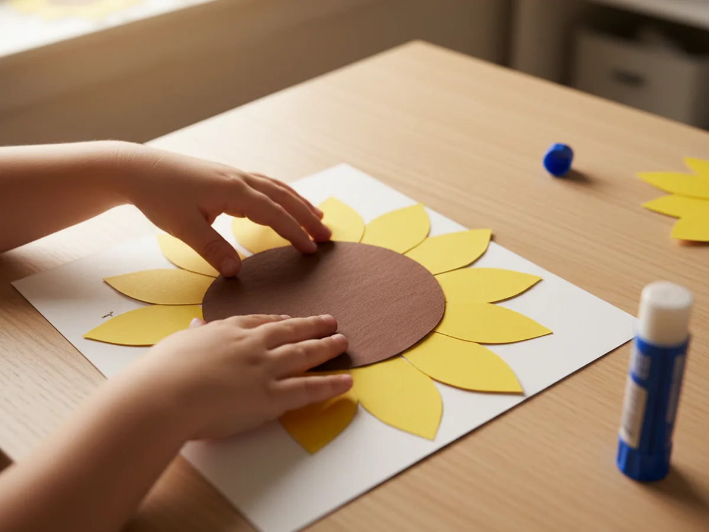
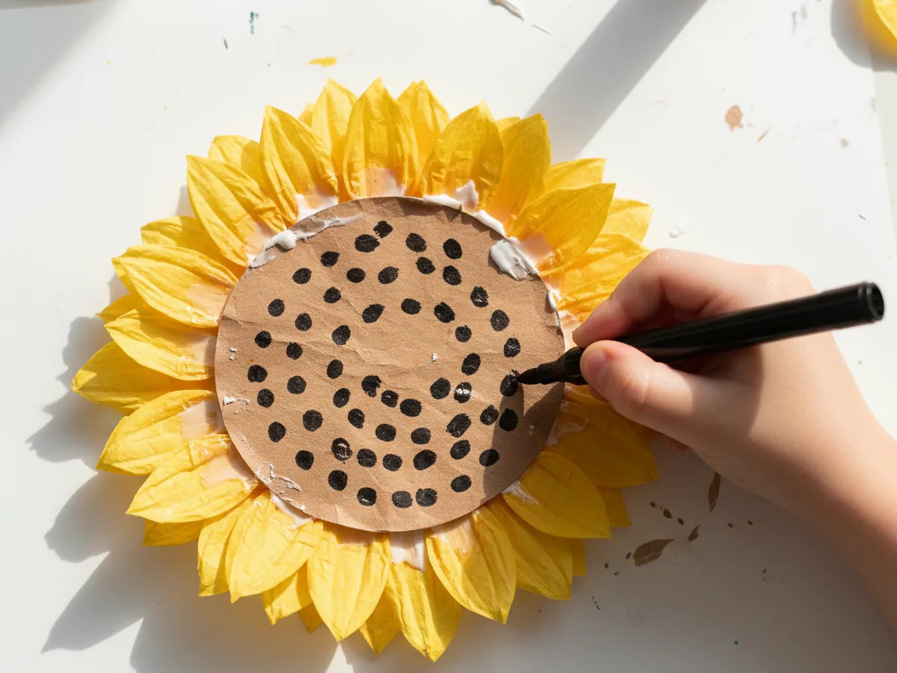
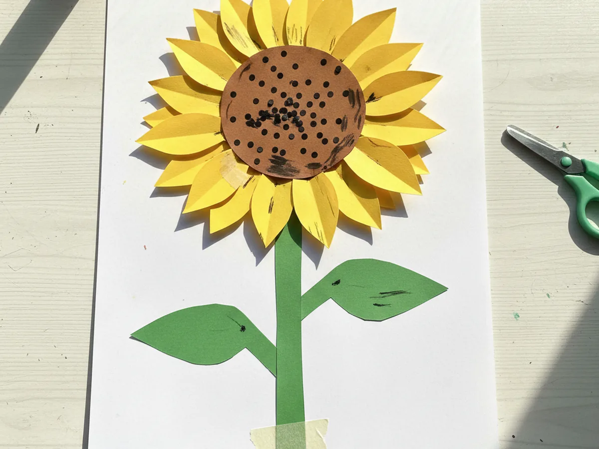

A sunflower paper craft is one of the happiest things you can make with a child. Those big golden petals, that warm brown center, the cheerful green stem. It looks sunny and beautiful on a kitchen counter, a bedroom windowsill, or stuck to the refrigerator with a magnet. And the best part is that it really is as easy as it looks. 🌻
This sunflower paper craft for kids uses nothing but construction paper, a glue stick, scissors, and a black marker. There is no paint involved, no drying time to wait through, and no mess that needs serious cleanup afterward. From the first petal to the finished stem, the whole thing takes about 35 minutes and leaves you with a beautiful paper sunflower your child will be genuinely proud of.
Why Kids Love This Craft
Sunflowers are one of those subjects that kids connect with instantly. They are bright, cheerful, and enormous in real life, which makes children feel like they are making something truly impressive when they recreate one with their own hands. This paper sunflower craft has that wonderful quality where even a very young child can look at the finished result and feel a clear sense of "I made that."
The steps in this project are varied enough to hold a child's attention from start to finish. Cutting the petals builds scissor skills and concentration. Arranging them in a circle is a satisfying spatial puzzle that children find genuinely engaging. Drawing the seed dots on the brown center gives them a moment of creative freedom. And when that stem goes on and the sunflower takes its final shape, there is a real little surge of pride that is lovely to witness.
Because the craft uses only paper, it is also a forgiving project. If a petal is a little crooked or the center is slightly off-center, the flower still looks wonderful. The imperfections are part of the charm, and children who might feel anxious about making things "perfectly" tend to relax quickly when they see how good their sunflower looks no matter what.
What You'll Need
Here is everything you need to make this sunflower paper craft. You likely have most of it at home already.
- Prang Construction Paper, Yellow (50 sheets, 12x18 in), the larger size gives you plenty of room to cut generous petals.
- Brown construction paper, for cutting the round sunflower center (a scrap from any multi-color pack works perfectly).
- Prang Construction Paper, Green (100 sheets, 9x12 in), for the stem and leaf shapes.
- Fiskars Training Scissors for Kids, blunt-tipped and spring-action, safe and easy for little hands from age 3 and up.
- Elmer's Disappearing Purple Glue Sticks (30-pack), mess-free and easy for children to control independently.
- Crayola Washable Markers, Black, for drawing the seed dots on the sunflower center.
- White cardstock or a sheet of thick paper, as the backing for the whole flower.
- A pencil, for tracing the petal template before cutting.
Step-by-Step Instructions
This sunflower paper craft step by step is easy to follow and beginner-friendly at every stage. Go through one step at a time and let your child do as much as they can.
Step 1: Trace and Cut the Yellow Petals
Start by drawing a simple petal shape on a small scrap of yellow paper. A good sunflower petal looks like a rounded oval that comes to a slight point at the tip. Make it about 3 to 4 inches long. Cut this first petal out and use it as your template. Trace around it onto the yellow construction paper and cut out about 12 petals total. You do not need all 12 to be perfectly identical. A little variation in shape and size actually makes the sunflower look more natural and more charming.
If your child is 4 or older, let them do the tracing and cutting. For younger toddlers, trace and cut yourself so you can save the arranging and decorating steps for them.

Step 2: Arrange the Petals in a Circle
Lay a sheet of white cardstock flat on the table. This is the backing the whole flower will be built on. Take the yellow petals and start arranging them in a circle on the cardstock, pointing outward like rays from the sun. Overlap the inner tips of the petals slightly so they come together neatly in the center. Try to space them evenly all the way around. Once you are happy with the arrangement, glue each petal down firmly, pressing for a few seconds to help it stick well.

Step 3: Cut the Brown Center Circle
Cut a large circle from brown construction paper. The circle should be big enough to cover the overlapping tips of all the petals when placed in the center. A good size is roughly 4 to 5 inches across for most petal arrangements. You can trace around a small bowl or a large cup to get a clean circle shape. This is a great step for an adult to handle since cutting a smooth circle from scratch takes a bit of practice, but older children who are confident with scissors can definitely try.

Step 4: Glue the Center Over the Petals
Apply glue stick to the back of the brown circle and press it firmly down into the center of the petal arrangement on the cardstock. The brown circle should cover the inner tips of all the petals and sit cleanly in the middle. The paper sunflower shape really comes to life in this step. Suddenly it looks like a real sunflower. Press down firmly for a few seconds to make sure it bonds well, especially around the edges of the circle.

Step 5: Add the Seed Dots
Hand your child a black washable marker and let them draw small dots all over the brown center circle. Real sunflower centers are covered in rows of seeds, so a scattered or spiral pattern of dots works beautifully here. There is no right or wrong way to do this step. Some children cover the whole center densely. Others add just a few dots. Both look wonderful. This is the most independent creative moment in the whole project and most children love having full control over it. ☀️

Step 6: Cut and Attach the Stem and Leaves
Cut a long, slightly tapered rectangle from green construction paper for the stem. It should be about an inch wide and tall enough to reach from the bottom of the cardstock up to the flower. Then cut two leaf shapes, like rounded teardrops, also from green paper. Glue the stem down the center of the cardstock below the flower, then glue a leaf on each side of the stem, angling them outward slightly. Your sunflower paper craft is now complete. 🌿

Variations to Try
Torn Paper Petals: Instead of cutting the petals with scissors, let your child tear the yellow paper into rough petal shapes by hand. The slightly uneven edges give the sunflower a softer, more textured look, and tearing paper is a wonderful sensory activity for toddlers who are not yet confident with scissors.
Rainbow Sunflower: Use construction paper in orange, yellow, and gold shades for the petals, mixing them together in the circle so each petal is a slightly different shade. The result looks like a sunset-colored sunflower that is especially beautiful when displayed in a window with light behind it.
Painted Center Version: Skip the black marker dots and instead let your child dip a fingertip into brown or dark paint and press fingerprint dots all over the center circle. The texture of the fingerprints adds a lovely dimensional look and makes the seed pattern feel even more like a real sunflower head.
Final Thoughts
This sunflower paper craft is the kind of activity that feels effortless to set up and surprisingly satisfying to finish. You need nothing special, it stays low-mess from start to finish, and the result genuinely looks like something worth displaying. More than that, it is a warm little shared moment, the two of you cutting and gluing and arranging together, and ending up with something bright and cheerful that your child made with their own hands. 🌻
Display your paper sunflower somewhere sunny and let your little one point it out to everyone who visits. They will beam every single time.
More Crafts You'll Love
If your child loved making this flower, these other paper crafts are a perfect next step: